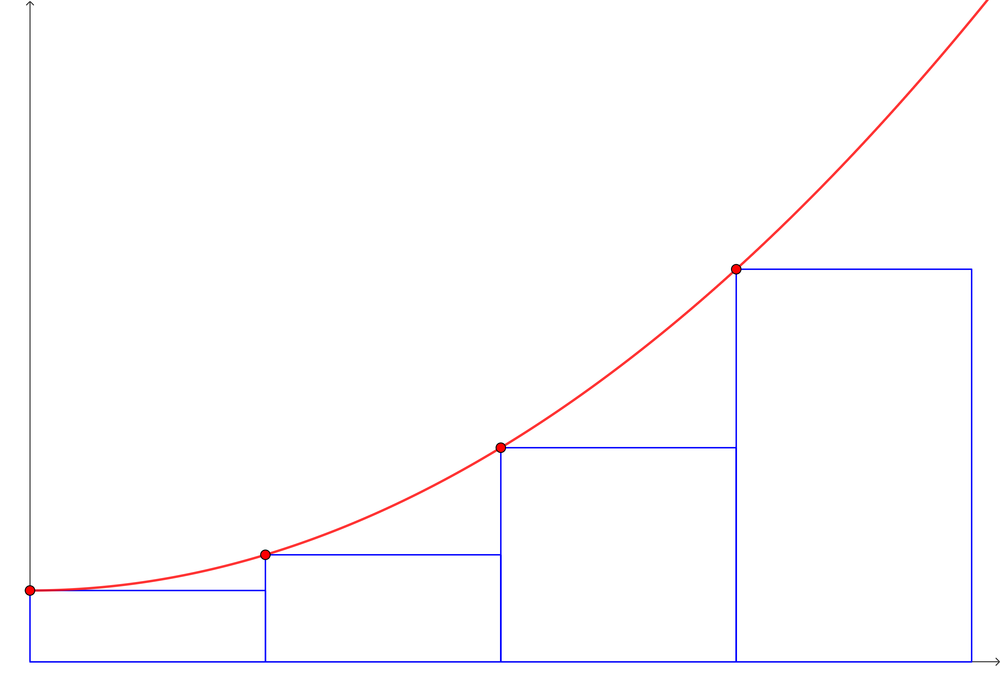
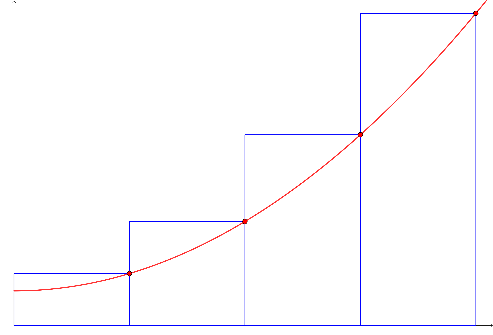
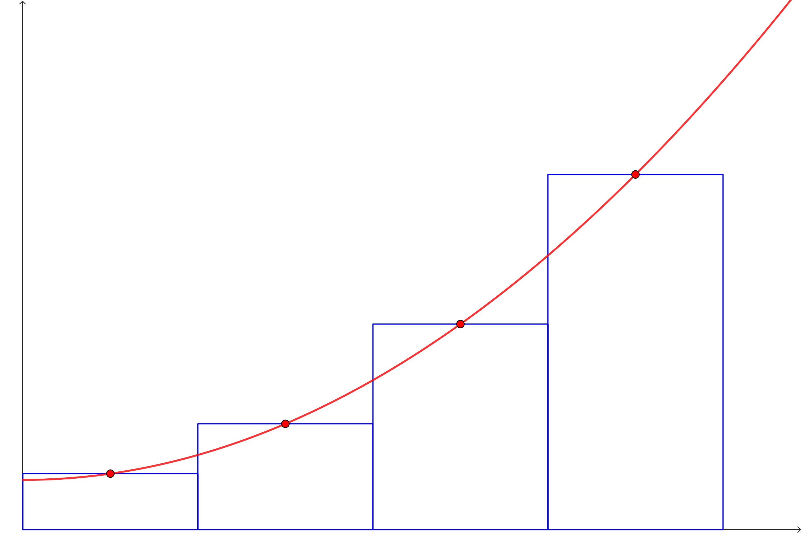

Riemann Sums and Taylor Polynomials#
By Raheem Mir
As the title suggests, in this notebook we are going to be exploring Riemann sums and Taylor polynomials, through GeoGebra activities and Python!
Approximating Area (Riemann Sums)#
This week, you’ll be getting started on Unit 4 and learn about integration…
As such, in today’s tutorial we are going to be approximating the area under a curve!
Let’s suppose we wanted to find the area under a given curve \(f(x)\) over a particular interval. Now it might not be possible to find the exact area under \(f(x)\) (between the curve and the \(x\)-axis), but we can make approximations. Specifically, we can use rectangles to approximate the area under a curve… this is known as a Riemann Sum. With more rectangles used, the more accurate the result. This is done by partitioning the interval and drawing a rectangle of varying height in each subinterval. For example, if we were to approximate the area under \(f(x)\), over the interval \([0,4]\), and wanted to use four rectangles, the subintervals would be: \([0,1], [1,2], [2,3], [3,4]\). The height of the rectangles is determined by one of three methods, either the Left Hand Rule, the Right Hand Rule, or the Midpoint Rule:
The Left Hand Rule sets the height of a rectangle to the value of the function at the left endpoint of the subinterval.
The Right Hand Rule sets the height of a rectangle to the value of the function at the right endpoint of the subinterval.
The Midpoint Rule sets the height of a rectangle to the value of the function at the midpoint (middle value) of the subinterval.
Exploring with GeoGebra:#
To help illustrate the idea of aproximating the signed area between a curve and the \(x\)-axis with rectangles, along with Left Hand Rules, Right Hand Rules, etc… We can visualize and explore Riemann Sums with GeoGebra!
Make sure to experiment with the sliders that set the number of rectangles, which method is being used (Right Hand, Midpoint, etc), the interval boundaries, and see how these changes affect the area approximation.
The applet also allows you to input and change the function being plotted, so you can use it to help you visualize the exercises that appear later on.
→ Run the code cell below to start the GeoGebra applet!
%%html
<iframe scrolling="no" title="Riemann Sum Activity" src="https://www.geogebra.org/material/iframe/id/qezjdfc4/width/700/height/500/border/888888/sfsb/true/smb/false/stb/false/stbh/false/ai/false/asb/false/sri/false/rc/false/ld/false/sdz/true/ctl/false" width="700px" height="500px" style="border:0px;"> </iframe>
Using Python to Compute Riemann Sums#
Now that we have a decent grasp on how we use rectangles to approximate the area under a given curve, let’s use Python to compute our approximations! Using Python has its benefits, as doing so yields results much faster, especially when compared to producing sketches by hand, or having to tackle problems that cannot be easily visualized, such as computing a Riemann Sum with 1000+ subintervals.
Getting Started With NumPy#
Just as in previous notebooks, we first have to “import” the library we want to use, so we can access its functionality. In this case, we are going to be using NumPy.
→ Run the code cell below!
import numpy as np # make sure to run this cell!
Similar to our Newton’s Method activity in the last notebook, we are going to be using a Python function to approximate the area under a particular curve, or put another way, one that computes the Riemann Sum of a given function for some interval.
This function is defined in the code cell below, and is the implementation given by Patrick Walls of UBC.
Since it has already been created, we can call it like we would any other function, and get right into using it for approximating area!
We can call it like so:
riemann_sum(f, a, b, N, method)
f represents the function that is being inputed. We are trying to approximate the area under this curve. Note that this is a traditional Python function, made with the def keyword and defined on an input/output basis. Not like the symbolic representations with SymPy we’ve mainly been using up to this point.
a represents the lower bound / endpoint of the interval we are approximating over.
b represents the upper bound / endpoint of the interval we are approximating over.
N is the number of equally sized subintervals that partition \([a,b]\) (i.e. how many rectangles/subintervals are we using?)
method determines which rule we use, the Left Hand rule, Right Hand rule, or Midpoint rule.
We specify which method we would like to use as follows: 'left' for the Left Hand rule, 'right' for the Right Hand rule, and 'midpoint' for the Midpoint rule, making sure to surround our choice with either single or double quotes.
→ Run the code cell below to define the function!
def riemann_sum(f,a,b,N,method):
dx = (b - a)/N
x = np.linspace(a,b,N+1)
if method == 'left':
x_left = x[:-1]
return np.sum(f(x_left)*dx)
elif method == 'right':
x_right = x[1:]
return np.sum(f(x_right)*dx)
elif method == 'midpoint':
x_mid = (x[:-1] + x[1:])/2
return np.sum(f(x_mid)*dx)
else:
raise ValueError("Method must be 'left', 'right' or 'midpoint'.")
Now let’s do an example!#
Let’s approximate the area under \(f(x) = 4x - x^2\) on the interval \([0,4]\), with \(4\) sub-intervals, using the Left Hand Rule.
First, we have to define the Python function that we will be inputting into riemann_sum():
→ Run the code cell below! Notice how we used the def keyword and the format (or syntax) used to define the function.
def f(x):
return 4*x - x**2
Now let’s call the riemann_sum() function!
→ Run the code cell below! Notice how we specify that we are using the Left Hand Rule.
riemann_sum(f, 0, 4, 4, 'left')
Great! The function took in our inputs and gave the desired output.
If you would like to see more of this particular example, have a look at the textbook where the other methods are also used, along with visuals.
Let’s try another example!#
Let’s approximate the area under \(f(x) = 3x^2 -3\) on the interval \([-2,2]\), with 3 subintervals, using the Right Hand Rule.
Again, we first have to define the Python function that we will be inputting into riemann_sum():
→ Run the code cell below!
def f2(x):
return 3*x**2 -3
Now let’s call the riemann_sum() function!
→ Run the code cell below! Notice how we specify that we are using the Right Hand Rule.
riemann_sum(f2, -2, 2, 3, "right")
Now it’s your turn!#
Complete the following exercises using the riemann_sum() function! Take a look at the previous examples if you get stuck.
Exercise 1:
Approximate the area under \(f(x) = x^2 + 3\) on the interval \([0,2]\) with \(8\) subintervals, using the Midpoint Rule.
→ Write your answer in the code cells below! The function you’ll need to pass into riemann_sum() is already done for you.
def f3(x):
return x**2 + 3
# Write the rest of the code here!
Exercise 2:
Approximate the area under \(f(x) = 2\sin(x) + 2\) on the interval \([0,1]\) with \(6\) subintervals, using the Left Hand rule.
→ Write your answer in the code cells below! The function you’ll need to pass into riemann_sum() is already done for you.
def f4(x):
return 2*np.sin(x) + 2
# Write the rest of the code here!
Exercise 3:
Approximate the area under \(f(x) = \dfrac{1}{1 + x^2}\) on the interval \([0,5]\), with \(10\) subintervals, and compute the result using each of the three methods.
→ Write your answer in the code cells below! The function you’ll need to pass into riemann_sum() is already done for you.
def f5(x):
return 1 / (1+x**2)
# Write your code here!
# Write your code here!
# Write your code here!
Taylor Polynomials#
Now, let’s shift our focus from approximating the area under a curve with rectangles, to approximating functions with polynomials.
To be specific, we are going to be working with Taylor polynomials! Below is a formal definition:
Let \(f\) be a function whose first \(n\) derivatives exist at \(x=c\). The Taylor polynomial of degree \(n\) of \(f\) at \(x=c\) is
Since you’ve already seen Taylor polynomials in class, we can get right into the exercises and exploration!
GeoGebra Activity:#
This time, we use GeoGebra to help us explore and visualize Taylor polynomials!
Your task is to approximate the function \(f(x) = \cos(x)\) at \(x = 0\) using \(12\) terms, and state the interval in which this appears to be an accurate approximation.
Verifying accuracy in this case can be done visually (make sure to zoom in), and you can type your answer in the labeled markdown cell below.
→ Run the code cell below to start up the GeoGebra applet!
%%html
<iframe scrolling="no" title="Taylor Polynomial Activity" src="https://www.geogebra.org/material/iframe/id/zwmptfpu/width/700/height/500/border/888888/sfsb/true/smb/false/stb/false/stbh/false/ai/false/asb/false/sri/false/rc/false/ld/false/sdz/true/ctl/false" width="700px" height="500px" style="border:0px;"> </iframe>
Write Your Answer Here!#
Double-click on this cell to edit it, and type the answer to the above question.
Using Python to Find Taylor Polynomials#
Of course, when approximating functions, as in finding and using Taylor polynomials, we can use Python to make computations more efficient (and easy).
Getting Started with SymPy#
This time around, we are going to be using SymPy, and just as before, we have to “import” (or load in) the library, to access its functionality:
→ Run the code cell below!
# Make sure to run this cell!
import sympy as sy
sy.init_printing() # formats the ouput
x = sy.symbols('x') # this makes x a symbol (variable)
Similar to the Riemann sum activity above, we are going to be using a Python function to find the Taylor polynomial at a particular point of a function, with a specified number of terms. Or put another way, a Python function that gives us the \(n \text{th}\) Taylor polynomial of a function at a given point.
Again, this function has already been created for you and can be called like any other, so we can get straight into using it!
We can call it like this:
taylor_polynomial(f, c, n)
f represents the “function” that we are inputting. It’s important to note that this is not an actual Python function, it is a symbolic representation made with SymPy, like we’ve used in previous notebooks.
c is the \(x\)-value we are trying to find the Taylor polynomial of the function at.
n is the number of terms we want to use (the degree of the Taylor polynomial).
→ Run the code cell below to define the function!
def taylor_polynomial(f, c, n):
tp = 0
for i in range(n + 1):
tp = tp + (f.diff(x, i).subs(x,c)) / (sy.factorial(i))*(x - c)**i
return tp
Time for an example!#
Let’s find the Taylor polynomial for \(f(x) = \cos(x)\) of degree \(n = 8\), at \(x = 0\), using the taylor_polynomial() function we’ve defined above:
→ Run the code cell below! Notice how we pass in the function.
p = taylor_polynomial(sy.cos(x), 0, 8)
p
Since we set our function call to a variable, p, we can use the resulting Taylor polynomial to approximate particular values.
Using our degree \(8\) Taylor polynomial of \(f(x) = \cos(x)\), let’s approximate \(\cos(2)\) using the .subs() and .evalf() functions:
p.subs(x,2).evalf() # .evalf() gives us a decimal result
Now it’s your turn!#
Complete the following exercises using the taylor_polynomial() function! Take a look at the previous example if you get stuck.
Exercise 1:
Find the Taylor polynomial for \(f(x) = x^2 \cos(x)\) of degree \(n = 2\), at \(x = \pi\).
→ Write your answer in the code cell below! Remember to use sy.cos() to represent the \(\cos(x)\) in SymPy.
# Write your code here!
Exercise 2:
Find the Taylor polynomial for \(f(x) = e^x\) of degree \(n = 5\), centred at \(0\). Approximate the value of \(e\) using the resulting polynomial.
→ Write your answer in the code cells below! Recall that \(e^x\) is represented in SymPy like so: sy.exp(x).
# Write your code here!
# Write your code here!